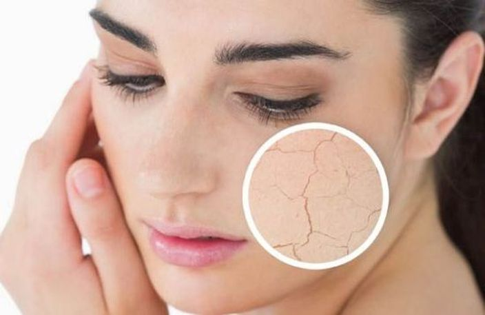
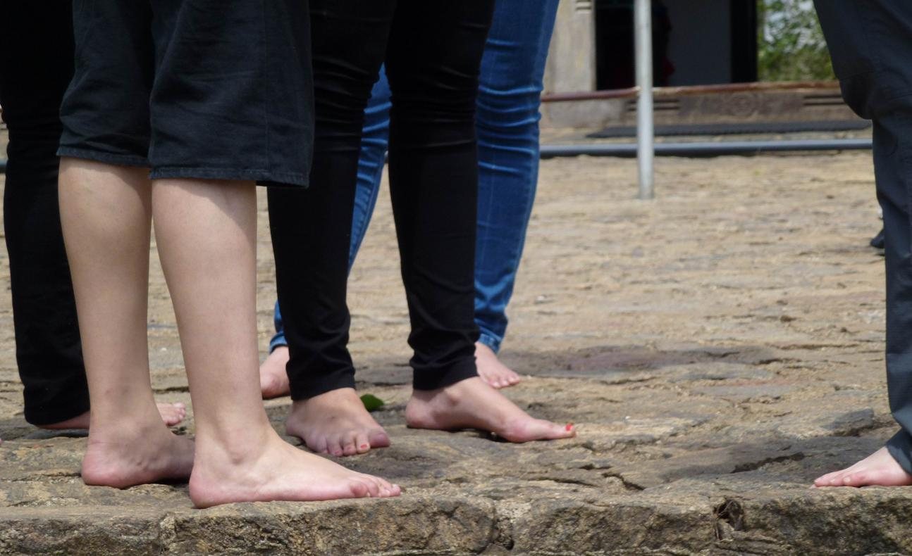
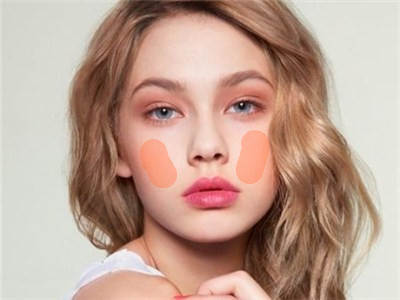
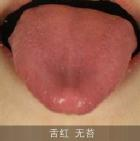
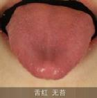
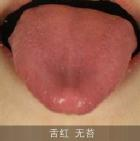

我的体质测试结果
我的体质是
阴虚质
根据您的体质辨识结果，建议你从阴虚质开始调理，阴虚质的人由于体内津液精血等阴液亏少，故补水滋阴才是根本。
  

什么是阴虚？
手足心热，平素易口燥咽干，鼻微干，口渴喜冷饮，大便干燥。
阴虚质是指人体精、血等阴液亏损，失去润泽脏腑、滋养经脉肌肤的功用，出现虚火上炎的偏颇。
血属于阴，女性一生中要消耗阴血，比较容易形成阴虚质。
阴虚体质有什么困扰？
五心烦热，手心、足心、胸中发热，喜欢光脚踩在凉凉的地板上。
易口燥咽干，口渴，爱喝凉水和冷饮。
口臭，口腔溃疡。舌红少津少苔。
大便干燥，小便短赤。
闭经，性冷淡。
肌肤苍白或红，常有烘热感，面色潮红。
眼睛发干，红血丝多、浑浊，视物模糊，眩晕耳鸣。
睡眠差，睡眠时间短，盗汗。
缺少耐心，急躁易怒。
我为什么会阴虚？
先天禀赋，父母遗传。
情绪长期压抑不舒展。不能正常发泄会郁结而化火，化火就会向身体内部燃烧消耗，使阴精暗耗。
长期心脏功能不好，或高血压病人吃利尿药太多。
长期食用辛辣燥热的食品。
经常熬夜。
过多服用利尿药或清热利湿方剂。
阴虚体质更容易患哪些疾病？
慢性咽炎、习惯性便秘、更年期综合症、结核病、支气管扩张。
肿瘤：如果阴虚质的人长期情绪压抑间夹血瘀倾向，易患肿瘤。
红斑狼疮：患者 80% 以上是女性。比较聪明漂亮，相对优秀，好胜心强的女性更要注意。
甲状腺功能亢进：中医的阴虚火旺之症，人情绪亢奋，容易激动，睡眠不佳。
阴虚失眠：多由于肝血不足所导致的。主要表现为心烦、盗汗、口干、口渴、心悸等。
轻妍教你这么改善！
饮食调理：
多食梨、百合、银耳、木瓜、菠菜、无花果、冰糖、茼蒿等甘凉滋润食物，喝沙参粥、百合粥、枸杞粥、桑椹粥、山药粥。少吃葱、姜、蒜、椒等辛辣燥烈品。
中药调理：
可用滋阴清热、滋养肝肾之品，北沙参、南沙参、冬、天冬、石斛、玉竹、黄精、明党参、枸杞子、墨旱莲、女贞子、五味子、乌梅、桑葚、黑芝麻、龟甲、鳖甲、燕窝、海参、鸡子黄等。
不要过度运动，避免出汗太多：
阴虚体质可能会较早出现关节不利涩滞，进入中年后不要经常做磨损膝关节的运动（下楼梯、登山、步机）。不宜夏练三伏，冬练三九。
拒绝熬夜：
23点前睡觉是底线。熬夜消耗肝血，自然阴虚火旺。
平心静气：
注意自己的情绪，时刻提醒自己保持淡定。少抱怨、少发火。
网站首页
一键拨号
体质分析

 
